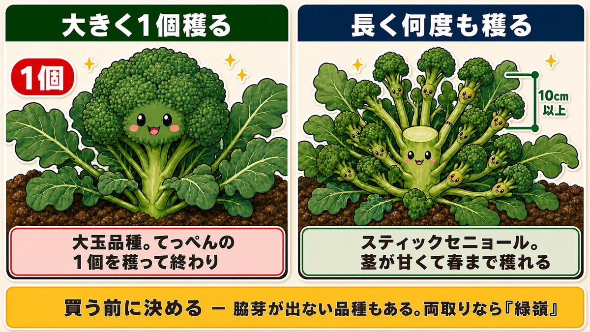
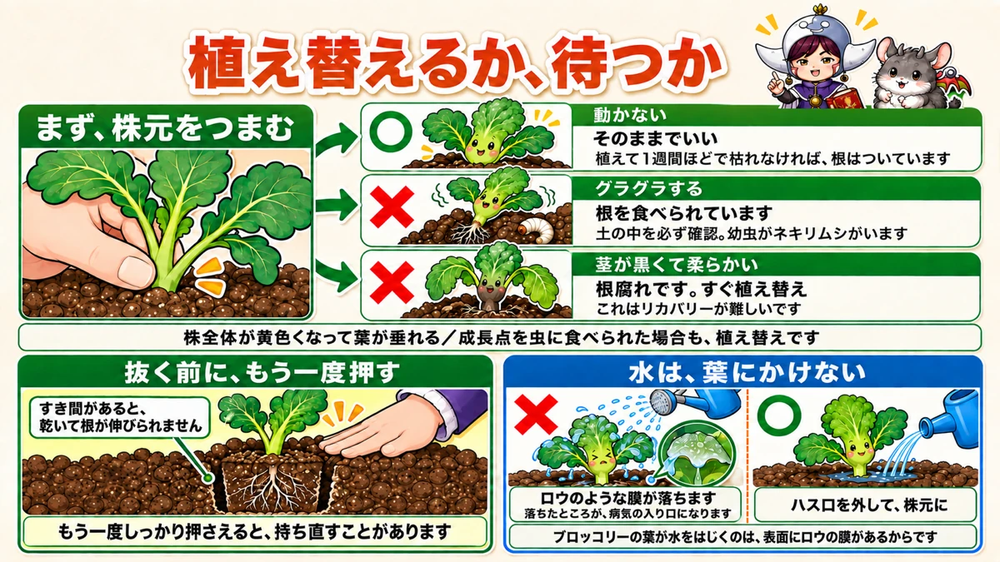
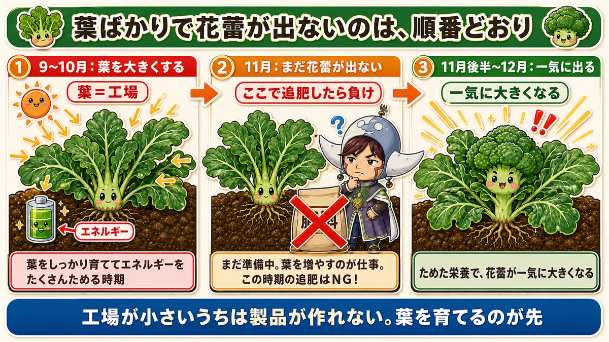
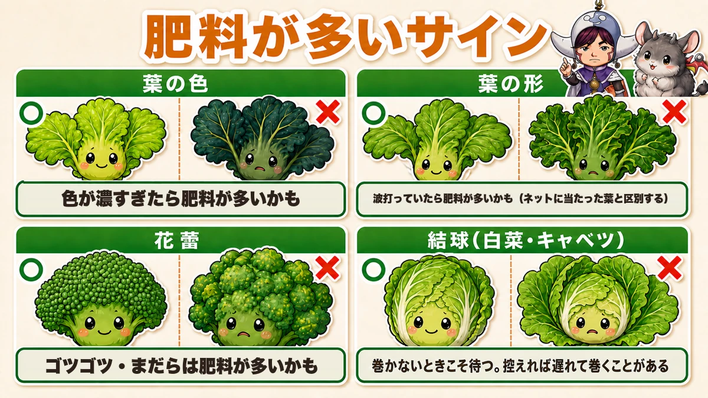
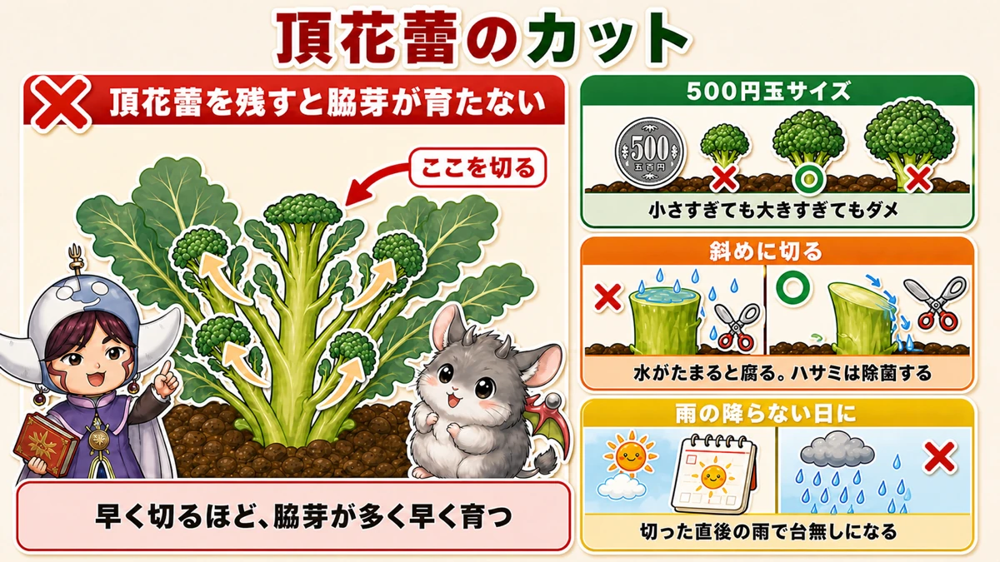
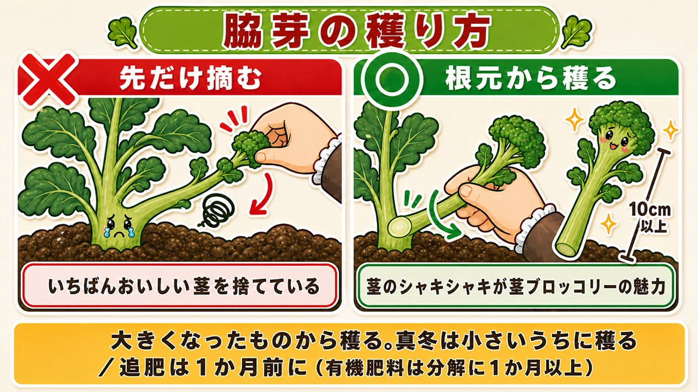
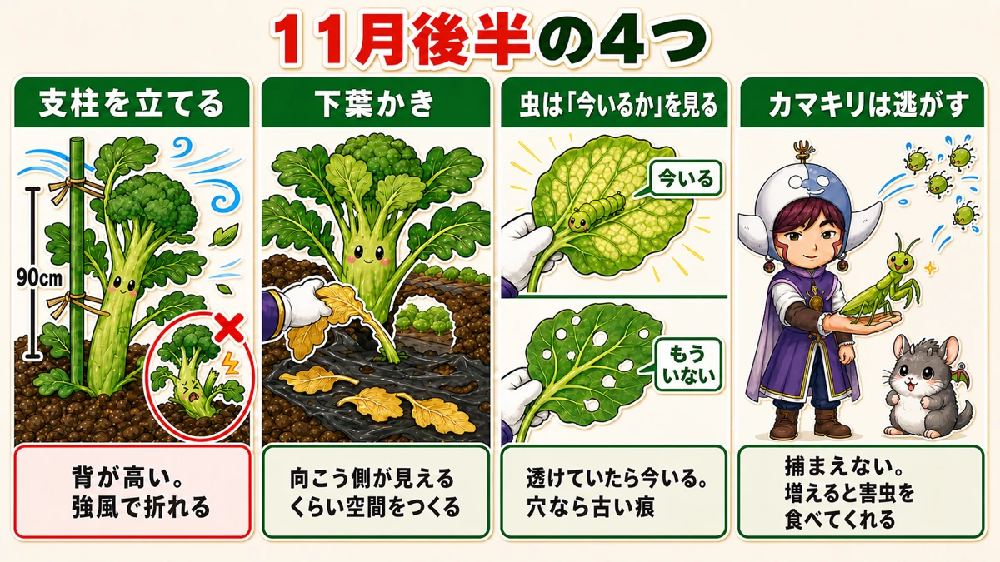

ブロッコリーの育て方｜追肥のやりすぎ（肥料過多）のサイン、植えつけ、茎ブロッコリー、脇芽の収穫、冬の鳥よけ
どうも、8150（えいこう）です🌱 家庭菜園歴8年、理科の教員免許を持っていて、有機・無農薬で野菜を育てています。
📖 この記事の目次
この記事で分かること
- ブロッコリーには、真ん中の大きなつぼみ（頂花蕾）を収穫する普通のブロッコリーと、わきから出る細いつぼみ（脇芽）を長く収穫する茎ブロッコリーがあります。どちらを選ぶかで、育て方が変わります。
- 秋冬に育てるなら、9月中に植えつけるのが目安です。遅れると、年内に収穫できなくなることがあります。
- 植えつけてから1か月くらいは、虫や根づきの失敗が多い時期です。こまめに見回りましょう。
- 肥料は多すぎても少なすぎてもうまくいきません。葉の色が濃すぎる、波打つ、つぼみに空洞ができる、などが肥料が多すぎるサインと説明されます。
- 茎ブロッコリーは、頂花蕾が小さいうちに切ると、脇芽がたくさん出てきます。
- 冬は、鳥に葉を食べられることがあります。ネットで囲って守ります。
ブロッコリーは、秋に植えて、冬から春にかけて収穫できる、家庭菜園でも人気の野菜です。スーパーで買うと1株でけっこうな値段がしますが、自分で育てると、真ん中の大きなつぼみを収穫したあとも、わきから小さなつぼみが次々に出てきて、長く楽しめます。
ただ、ブロッコリーは虫に好まれやすく、肥料の加減にも少しこつがいる野菜です。植えつけの時期が遅れると、つぼみが小さくなってしまうこともあります。この記事では、ブロッコリーの育て方を、品種選びから植えつけ、肥料、収穫、冬の守り方まで、順番に書いていきます。説明が分かれているところは、両方の考え方を並べておきますね。

早見：ブロッコリーの基本（ひと目で分かる目安）
2つのタイプ
- 普通のブロッコリー：真ん中の大きなつぼみ（頂花蕾）を収穫する。品種によっては、そのあと脇芽も出る
- 茎ブロッコリー：頂花蕾を早めに切って、わきから出る細いつぼみ（脇芽）を、茎ごと長く収穫する
時期の目安（秋冬どり）
- 植えつけ：9月中、できれば9月中旬まで（中間地では8月下旬〜10月という説明も）
- 収穫：10月下旬ごろから2月ごろまで（品種や植えつけ時期による）
植え方の目安
- 株間：40〜50cmくらい（30〜35cmの例もある）
- 畝：水はけのため高めに
- 植える前に苗に水を吸わせ、植え穴にも水を入れて、引いてから植える
品種選び：育て方が決まる
普通のブロッコリーと茎ブロッコリー
ブロッコリーは、大きく分けて次のようなタイプがある、と説明されます。
- 茎のてっぺんに大きなつぼみが一つだけできるタイプ
- 大きなつぼみを取ると、わきに小さいつぼみがたくさん出てくるタイプ
- 小さいつぼみがたくさんできて、長く収穫できる茎ブロッコリー
「大きく取りたい」なら、つぼみが大きくなる品種を、「長く取りたい」なら、つぼみは小さいけれど脇芽がたくさん出る茎ブロッコリーを選ぶ、という選び方が紹介されています。
茎ブロッコリーの魅力
茎ブロッコリーは、脇芽がたくさん出て、アスパラガスのように茎の部分がやわらかく甘い、と紹介されます。早めに植えれば年内から、冬を越させれば春ごろまで収穫を楽しめる、と説明されます。
脇芽が大きくなる品種も
普通のブロッコリーの中にも、真ん中のつぼみを収穫したあと、脇芽が大きく育つ品種があります。脇芽が真ん中のつぼみと同じくらい大きくなって、3〜5個とれる、という話もあります。ただし、これは話している人の体感で、とれる数を保証するものではありません。品種の名前は、タネや苗の袋で確かめてください。
似ている野菜とは分けて考える
ロマネスコやカリフラワーも、ブロッコリーの仲間として一緒に育てられることがあります。ただし、育ち方や収穫の目安は少しずつ違うので、ブロッコリーの数字をそのまま当てはめないようにしましょう。
植えつけ
植える時期は、9月中が目安
秋冬に育てるブロッコリーは、9月中旬までの植えつけが適期で、遅れると年内に収穫できなくなる、と説明されます。
ただし、植える時期の目安には幅があります。中間地では、8月下旬から10月に植えて、10月から2月に収穫する、という説明があります。暑さが続く年は、9月15日ごろから9月後半までに植えつける、という説明もあります。9月下旬から10月上旬の植えつけなら、品種によっては12月から収穫できる、という話もあります。
よい苗の選び方
苗を買うときは、次のようなところを見ます。
- 成長点（中心の新しい芽）がしっかりあるもの。縮れたり、枯れたり、折れたりしているものは避ける
- 葉に虫食いのあとや傷、変色がないもの。葉の裏も見る
- 葉が四方にバランスよく広がり、葉と葉の間隔がつまっているもの
- 双葉が青々としているもの。双葉が黄色く枯れているのは、苗が古くなっているしるし
- 本葉が5枚以上、できれば7枚くらいあるもの
小ぶりでも、葉が青々として成長点が傷んでいない苗は、よい苗だと説明されます。
土づくりと元肥
ブロッコリーの土づくりの例として、1平方メートルあたり、苦土石灰100g、牛ふん堆肥2〜3kg、化成肥料100gを入れる、という例があります。植えつけの1週間前までに済ませ、肥料は表面にまくだけでなく、土の中に混ぜこむように、と説明されます。
有機の肥料を使う例では、8月のうちに土づくりをして、牛ふん堆肥や油かす、鶏ふんを入れる、という説明があります。育ちはじめのころの窒素分を大切にする、という考え方です。元肥の量は、話している人によってかなり違うので、畑の土の状態や、前に何を育てたかを見て決めましょう。
手順1：畝を作る
ブロッコリーは湿気に弱い野菜です。根が水びたしになると、根が傷んだり、病気が出たりしやすくなります。畝を高くすると、水が下のほうに流れて水はけがよくなる、と説明されます。畝の幅は、1列なら60cm、2列なら1〜1.2mくらい、という例があります。
手順2：株間をとる
ブロッコリーは、キャベツより大きく育ちます。葉が横に大きく広がるからです。株と株のあいだは、40〜50cmくらいとる例が多いです。2列に植えるなら、列と列のあいだを30〜50cmほどあけます。30〜35cmと、もう少しつめて植える例もあります。
手順3：苗に水を吸わせる
植える前に、苗のポットに水を吸わせておきます。植えつけの30分前には水をやっておく、という説明や、バケツの水にポットの半分くらいまで10分ほどつけておく、という方法があります。
手順4：植え穴に水を入れ、引いてから植える
植え穴に先に水を入れて、水が土にしみこんで引くのを待ってから植えます。穴にまだ水が残っている状態で植えるのは避けましょう、と説明されます。
手順5：高さを合わせて、押さえる
ポットの土の面が、マルチの面より少し高めになるように植えます。へこんでいると雨水がたまり、出っ張りすぎると水を吸いにくくなる、と説明されます。深植えにならないように気をつけましょう。植えたら、まわりの土を戻して、しっかり押さえます。押さえが足りないと、根づきが悪くなります。
手順6：水は株元に
植えたあとの水やりは、葉に直接かけず、株元にやります。葉の表面のつや（ろう物質）がはがれて、病気の原因になることがある、という説明があります。
手順7：すぐに防虫ネットを
ブロッコリーはアブラナ科の野菜で、キャベツや白菜と同じく、虫に好まれやすい野菜です。苗を植えたら、すぐに防虫ネットをトンネル状にかけ、すそのすき間をふさぎます。苗の葉の裏に卵がないかも、植える前に確かめておきましょう。
手順8：支柱で支える
ブロッコリーや茎ブロッコリーは背が高くなるので、台風などの強い風で茎が折れたり、倒れたりすることがあります。90cmくらいの支柱を立てて、茎の半分より少し上のあたりを結んで支える、という方法が紹介されています。
暑い時期の植えつけ
8月末から9月初めのまだ暑い時期に植えるなら、防虫ネットの上から不織布をかけて、強い日差しをさえぎる、という方法もあります。黒いマルチは、暑い時期には地温が上がりすぎて、苗が根づかずに枯れることがある、という注意もあります。

植えつけから1か月の見張り
1週間で根づいたかを見る
植えつけから1週間ほどたって、苗が枯れていなければ、根づいた（活着した）目安、と説明されます。新しい葉が少しずつ出てきたり、葉がしゃんと立ってきたりすれば、根が土になじんできたしるしです。
植え替えを考えるサイン
次のような様子が見られたら、根づきに失敗しているか、根や成長点に被害が出ている可能性があります。
- 株全体が黄色くなって、葉が垂れている
- 株元がぐらぐらして、抜けやすい
- 成長点（中心の芽）が折れたり、食べられたりしている
株元がぐらつく場合は、土の中のコガネムシの幼虫やネキリムシに根を食べられていないか、土を少し掘って確かめてみましょう。水のやりすぎで根が腐っていることもあります。
初めに気をつけたい虫
植えつけ直後に気をつけたい虫は、アオムシ、ヨトウムシ、アブラムシ、シンクイムシなどです。
- アオムシやヨトウムシ：葉を食べる。葉に穴があいたり、葉の上やマルチの上に黒いふんが落ちていたりする
- シンクイムシ：成長点を食べる。芽が出なくなったり、二つに分かれたり、小ぶりになったりする
- アブラムシ：葉の裏や新しい芽に集まる
虫の見分け方
古くて大きな穴は、もう虫がいなくなっていることがあります。葉が薄くすけたようになっていて、葉の裏にふんがある場合は、今まさに幼虫がいる可能性があります。新しい葉や成長点に被害が出ていないかを、優先して見ましょう。
ヨトウムシの親（ガ）は、1枚の葉の裏に50〜100個ほどの卵をまとめて産む、と説明されます。かえると一斉に葉を食べはじめ、まわりのキャベツや大根、白菜にも広がっていきます。葉の裏の卵を見つけたら、葉ごと取り除きましょう。
ネットは、かけても安心しない
防虫ネットは、かけたあとも、完全に虫を防げるわけではありません。すそを土に埋めて、毎日のように葉の裏や穴、ふんを確かめることが大切です。ネットと野菜のあいだに空間を作っておくと、外から卵を産みつけられにくくなります。
葉が食べられても、成長点が無事なら
葉が食べられただけなら、株への影響はそれほど大きくない場合がある、と説明されます。一方、成長点が食べられてしまった場合は、植え替えを考えます。
ネットの支柱は、深く浅い角度で
防虫ネットの支柱は、深く差しこみ、浅い角度（最低でも45度くらい）で差すと、ネットにすき間ができにくい、という説明があります。支柱がネットを突き破ったり、ネットがたるんで野菜にふれたりしないように気をつけましょう。
薬を使わない虫対策
農薬を使わない虫対策としては、手で取り除く、黄色い粘着シートを置く、といった方法があります。ただし、薬ほど強い効果はない、という説明もあります。毎日の見回りで、早めに見つけて取り除くことがいちばんの対策です。

つぼみは、葉が育ってからできる
「つぼみが出ない」と焦らない
ブロッコリーを育てていると、葉ばかり大きくなって、なかなかつぼみが出てこないと不安になることがあります。でも、ブロッコリーは、一定の大きさまで育ち、一定の低い温度に当たることで、つぼみができる、と説明されます。
つぼみができるまでの葉の数の目安は、早く収穫できる品種（早生）で7〜8枚、遅く収穫する品種（晩生）で12枚前後、という説明があります。品種によって、つぼみができるのに必要な温度や日数が違うので、収穫が遅い品種ほど、つぼみが見えるまでに時間がかかります。焦らずに待ちましょう。

追肥と、肥料が多すぎるサイン
最初の追肥
最初の追肥の時期は、説明によって違います。
- 植えつけから2週間後に1回目、そのあとは月に1回
- 植えつけから3〜4週間後に、土寄せと一緒に
- 植えつけから約1か月後に1回目
追肥のやり方
株元から20cmくらい離れたところに、移植ごてで深さ10〜15cmほどの穴をあけ、肥料を入れて、土でふたをする、という方法が紹介されています。根がまだ広く張っていない最初のころは、株元から20〜25cmくらいのところに入れる、という説明です。株の両側の2か所に入れる例があります。マルチを張っていない場合は、株のまわりに円を描くように肥料をまいて、土寄せで覆う方法もあります。
追肥の量の例
追肥の量は、使う肥料や話している人によって違います。鶏ふんを1株20cc、または株の両側に20ccずつで計40ccくらい、という例や、化成肥料を1平方メートルあたり30gくらい、という例があります。肥料の袋の説明も確かめてください。
肥料が多すぎるサイン
肥料が多すぎると、次のようなサインが出る、と説明されます。
- 葉の色が、モスグリーンのように非常に濃くなる
- 葉が波打っている
- つぼみの表面のでこぼこが、とても大きく見える
- つぼみの色がまだらになる
肥料が多すぎると、虫も寄ってくる
追肥の量が多いと、虫の被害にあいやすくなったり、つぼみの状態が悪くなったり、病気につながったりすることがある、と説明されます。逆に、肥料が少なすぎると、つぼみが小さくなります。決められた量を守ることが大切です。
つぼみの中が空洞になる
収穫したブロッコリーの茎の中に、空洞ができていることがあります。原因については、いくつかの説明があります。
- 肥料のやりすぎや、雨で肥料が一気に効いたこと
- 急な高温と、水分の多すぎ
- ホウ素という栄養の不足
- 外側が先に育って、内側の成長が追いつかないこと
空洞ができたブロッコリーも食べられますが、少し硬くなるので、細かく切って炒めると食べやすい、と説明されます。ただし、空洞の底がべと病（カビの仲間が原因の病気）で茶色くなることもあります。
土寄せも忘れずに
植えつけから2〜3週間たったら、株元に土を寄せます（土寄せ）。株が安定して、台風などの強い風にも倒れにくくなります。土寄せは、収穫までに最低2回はやっておきたい、という説明があります。追肥と同じタイミングで行うと、手間が省けます。
弱った株への手当て
冬の前に、育ちが悪くて弱っている株には、発酵済みの鶏ふんを30ccほど、株のまわりの2〜3か所に入れて様子を見る、という方法が紹介されています。ただし、根や成長点がなくなってしまった株は、寒くなってくると気温が足りずに回復が難しいので、栽培の計画を切り替えることも考える、という説明です。

茎ブロッコリーは、頂花蕾を早めに切る
頂花蕾は、500円玉くらいで切る
茎ブロッコリーは、真ん中のつぼみ（頂花蕾）が平べったく、あまりふくらまない形をしています。そのまま育て続けると、本来の脇芽が育ちにくくなります。早めに切れば、脇芽がたくさん、早く育つ、と説明されます。
切る目安は、頂花蕾が500円玉くらい、または直径3cm弱くらいになったときです。
急がなくてもよい、という説明も
500円玉からゴルフボールくらいが一般的な目安だけれど、家庭菜園なら急ぐ必要はなく、げんこつくらいの大きさになってから切るほうが初心者向き、という説明もあります。500円玉の大きさからげんこつの大きさになるまでは、せいぜい1週間から10日ほどだ、という説明です。
斜めに切る
切るときは、はさみをアルコールなどで消毒し、切り口をまっすぐではなく、斜めにします。切った頂花蕾も、もちろん食べられます。切り口に雨水がたまらないようにして、雑菌が入ったり、腐ったりするのを防ぐためです。雨がすぐに降らない晴れた日を選んで切りましょう。
普通のブロッコリーは、大きく育ててから
普通のブロッコリーやカリフラワーの真ん中のつぼみは、大きく育てて食べるものなので、茎ブロッコリーのように早めに切ってはいけません。タイプを間違えないようにしましょう。

脇芽の収穫
茎ごと、根元から長く収穫する
茎ブロッコリーの脇芽は、つぼみだけでなく、茎ごと食べます。ゆでたり炒めたりすると、茎の甘さがよく分かります。先のやわらかい部分だけを摘むのではなく、根元からなるべく長く収穫するのが、茎ブロッコリーの魅力を生かす方法、と説明されます。手でぽきっと折れるところで収穫する、という目安もあります。
脇芽の長さの目安
脇芽を収穫する長さは、説明によって違います。
- 10cmくらい
- 10〜15cmくらいでこまめに切る
- 15〜20cmくらい
脇芽が伸びすぎると、もとの茎が硬くなってくるので、こまめに切ると次の芽に栄養が回って、収穫量が増える、という説明もあります。
短く取るか、長く取るか
つぼみだけを短く取ると、次のつぼみが早く出てきます。つぼみと茎を長く取ると、次のつぼみが出るまでに少し時間がかかります。どの長さで取るかは好みでよい、と説明されます。
花を咲かせない
脇芽を残しすぎて、花を咲かせないようにしましょう。暖かくなるほど、つぼみから花が咲くまでの時間が短くなります。つぼみが見えたら、順番に収穫していきます。
普通のブロッコリーも、脇芽が出る
普通のブロッコリーも、真ん中のつぼみを収穫したあと、株を残しておけば、品種によっては脇芽が出て、小ぶりなつぼみを収穫できる、と説明されます。ただし、深く切りすぎたり、株ごと抜いたりすると、脇芽は出ません。収穫したあとに追肥をすると、脇芽を出しやすくなる、という説明もあります。
普通のブロッコリーの収穫の目安
普通のブロッコリーは、真ん中のつぼみが、スーパーで売られているような状態になったら収穫します。直径15cmくらいが目安、という説明もあります。小さなつぼみが開きはじめると味が落ちるので、つぼみがかたくしまっているうちに収穫しましょう。

冬の守り方
冬は、鳥に葉を食べられる
12月から2月、特に1月後半から2月初めの雪のあとは、虫や草のタネなどのえさが減って、ムクドリやヒヨドリなどの鳥が、背の高いブロッコリーや茎ブロッコリーの葉を食べにくる、と説明されます。
葉を食べられると、光合成ができなくなって、大きなつぼみがとれなくなります。ここまで育ててきたのに、最後の最後で鳥に食べられてしまうのは、本当にもったいないですよね。収穫が近い時期こそ、守りをしっかりしておきましょう。茎ブロッコリーの脇芽も、葉がないとほとんど育たなくなります。
ネットで囲う
鳥よけには、株をネットで囲います。支柱で高さを出して株を囲い、つなぎ目や合わせ目のすき間を、洗濯ばさみやパッカーなどでしっかり閉じます。ネットがめくれていた場所だけ食べられて、ネットの中は無事だった、という例もあります。すき間を作らないことが大切です。
防虫ネットを外すか
11月後半には、防虫ネットを外すと日がよく当たって光合成が盛んになり、つぼみが大きくなる、という説明があります。一方で、10月はまだ暖かく虫が残っているので、ネットを調整して続ける、という説明もあります。冬は鳥よけのためにネットを張り直す、という考え方もあります。
冬の追肥
有機の肥料は、追肥してから1か月以上たってから効きはじめる、と説明されます。そのため、1月に茎ブロッコリーなどに追肥しておくと、2〜3月に効いてくる、という考え方です。ブロッコリーの脇芽は、1月から2月にかけて出にくくなりますが、追肥しておけば、春にもう1回くらい収穫できる、という説明もあります。
秋冬どりブロッコリーの1年（例）
秋冬に収穫するブロッコリーの、おおまかな流れの例です。地域や品種で前後するので、目安として読んでください。
7月〜8月：苗の準備と土づくり
タネから育てるなら、7月ごろに苗を作りはじめます。苗を買うなら、8月中旬以降に準備を考えます。植えつけの1週間以上前までに、土づくりを済ませておきます。
9月：植えつけ
9月中、できれば9月中旬までに植えつけます。植えたらすぐに防虫ネットをかけ、支柱を立てます。
9月〜10月：根づきと虫の見張り、追肥
植えつけから1週間で根づいたかを確かめ、1か月くらいは虫をこまめに見張ります。追肥と土寄せも、このころに行います。
10月下旬〜：収穫の始まり
品種によっては、10月下旬ごろから真ん中のつぼみが収穫できるようになります。茎ブロッコリーは、頂花蕾を早めに切って、脇芽の収穫を始めます。
12月〜2月：冬の収穫と鳥よけ
脇芽を順番に収穫しながら、鳥よけのネットで株を守ります。1月ごろの追肥で、春にもう少し収穫を続けられることがあります。
失敗の見分け方
植えてすぐ、苗がしおれて枯れた
根づきに失敗した可能性があります。押さえが足りなかったか、暑すぎたか、根を虫に食べられた可能性があります。株元を掘って確かめ、植え替えを考えましょう。
葉の色が濃すぎて、波打っている
肥料が多すぎる可能性があります。追肥を控えて、様子を見てください。
茎の中に空洞ができた
肥料のやりすぎ、雨で肥料が一気に効いたこと、急な高温や水分の多すぎなどが考えられます。追肥の量を守り、水はけをよくしておきましょう。
冬に葉がぼろぼろになった
鳥に食べられた可能性があります。ネットで囲って守りましょう。
つぼみが黄色くなった
収穫が遅れて、花が咲きかけている可能性があります。つぼみがかたくしまっているうちに収穫しましょう。
株が小さいうちに、小さなつぼみができた
株が十分に育つ前に、小さなつぼみができてしまうことがあります。肥料が切れていたり、植えつけたあとの根づきがうまくいかなかったりすると起きやすい、と説明されます。植えつけの時期と、最初の追肥を見直してみてください。
花が咲いて、茎ブロッコリーが弱ってきた
脇芽の収穫が遅れて花が咲き、株が弱ってきた場合は、切り戻して、根元から30cmほど離れたところに米ぬかやぼかし肥料を少し追肥する、という再生の方法も紹介されています。春先に、もうひとがんばりしてもらう方法です。
説明が分かれていること
最初の追肥の時期と量
- 植えつけ2週間後に1回目、そのあと月1回
- 植えつけ3〜4週間後に、土寄せと一緒に
- 植えつけ約1か月後に1回目。収穫まで1回だけ、という説明も
畑の元肥や、品種（茎ブロッコリーは長く収穫するので追肥を続ける）で変わります。
頂花蕾を切るタイミング
- 500円玉くらい、直径3cm弱で切る
- 家庭菜園なら急がず、げんこつくらいになってからでもよい
脇芽の長さ
- 10cm、10〜15cm、15〜20cmと、説明によって違う
株間
- 40〜50cm
- 30〜35cm
黒マルチを使うか
- 暑い時期は黒マルチで地温が上がりすぎて枯れることがある
- 白いマルチを使う。普通のマルチなら10月以降に
よくある質問
Q. 普通のブロッコリーと茎ブロッコリー、初めてならどちらがいいですか？
A. 大きなブロッコリーを1つ収穫したいなら普通のブロッコリー、少しずつ長く収穫したいなら茎ブロッコリーです。茎ブロッコリーは、冬を越させれば春まで収穫できるので、長く楽しみたい方に向いています。
Q. 植えつけが10月になってしまいました
A. 植えつけが遅れると、年内に収穫できないことがあります。10月中旬から下旬に植える場合は、ビニールトンネルで保温する、という方法が紹介されています。早く収穫できる品種を選ぶのも一つの方法です。
Q. 苗の根がポットの底から出ています
A. 根がポットの底から出ている古い苗でも、ブロッコリーは育つ、と説明されます。根がぐるぐる巻いて茶色くなっている場合は、根の一部を切ってから植える方法も紹介されていますが、これは古い苗に限った方法です。ふつうの苗は、根をいじらずに植えましょう。
Q. 収穫したブロッコリーが小さかったです
A. 収穫の時期になってから肥料や水を増やしても、取り戻すのは難しい、と説明されます。植えつけの時期や、最初の追肥を見直してみてください。脇芽が出る品種なら、収穫後に追肥をして、脇芽を育ててみましょう。
Q. とうもろこしのあとに植えてもいいですか？
A. とうもろこしのあとは、土に残った肥料を利用できるので、元肥や追肥を少なくできるかもしれない、という説明があります。ただし、肥料が多すぎると、虫や生育障害、空洞化の原因になるので、肥料の量に気をつけましょう。
Q. 防虫ネットは、いつまでかけておけばいいですか？
A. 植えつけから10月いっぱいはネットをかけ、11月ごろには幼虫が減ってくる、という説明があります。ただ、暖かい年は虫が長く残ることもあるので、虫の様子を見て判断してください。冬は鳥よけとして、ネットを張り直しておくと安心です。
Q. 収穫したブロッコリーの茎も食べられますか？
A. 食べられます。ブロッコリーの茎は、皮を厚めにむくと、中がやわらかく甘くておいしいです。茎ブロッコリーは、茎ごと食べるのが前提の品種です。
Q. 鳥よけのネットで、日当たりが悪くなりませんか？
A. 目の細かいネットや色の濃いネットは、光をさえぎることがあります。鳥よけなら、防虫ネットや、目の粗い防鳥ネットでもかまいません。株にネットがべったりつかないように、支柱で高さを出しておきましょう。
Q. 春にも育てられますか？
A. 育てられます。春に育てる場合は、2〜3月にタネをまき、3〜4月に植えつけて、5〜6月に収穫する、という説明があります。株間は45〜50cmくらいが目安です。春は暖かくなるにつれて虫が増えるので、防虫ネットは欠かせません。
Q. 雨の日に収穫してもいいですか？
A. 切り口から雑菌が入りやすくなるので、できれば晴れた日に収穫しましょう。切り口が早く乾くと、腐ったり病気になったりしにくくなります。収穫に使うはさみも、消毒しておくと安心です。
Q. 1株から、どれくらい収穫できますか？
A. 普通のブロッコリーなら、真ん中の大きなつぼみが1つと、品種によっては、そのあとの脇芽がいくつか収穫できます。茎ブロッコリーは、脇芽を何度も収穫できるので、冬を越させれば春まで少しずつ長く楽しめます。とれる量は、品種や育て方、冬の寒さによって変わります。
Q. 虫に食べられた葉は、取ったほうがいいですか？
A. 葉が食べられただけなら、株への影響はそれほど大きくない場合がある、と説明されます。穴のあいた葉でも、光合成をしてつぼみを育てる役目は果たしてくれるので、むやみに取らずに残しておきましょう。虫そのものは、見つけたら取り除いてください。
学ぶ🔬 ブロッコリーは、花が咲く前のつぼみ
ここからは、ブロッコリーのしくみについて、少しだけ深く書いておきます。読み飛ばしても大丈夫です。
食べているのは、つぼみの集まり
ブロッコリーのもこもこした部分は、小さな花のつぼみが、たくさん集まったものです。そのまま置いておくと、つぼみが開いて、黄色い小さな花が咲きます。食べているのは、花が咲く前のつぼみなんですね。
だから、収穫が遅れて、つぼみが黄色くなってくると、花が咲きはじめた合図です。つぼみがかたく、緑色のうちに収穫するのがおいしく食べるコツです。
寒さに当たって、つぼみを作る
ブロッコリーは、株が一定の大きさに育ってから、一定の低い温度に当たることで、つぼみを作りはじめる、と説明されます。株が小さいうちに寒くなってしまうと、小さなつぼみしかできません。
秋に植えつける時期が大切だと言われるのは、寒くなる前に、株をしっかり大きく育てておく必要があるからです。
頂花蕾を切ると、脇芽が伸びるしくみ
植物の茎の先端（いちばん上のつぼみや成長点）では、わき芽が伸びるのをおさえる植物ホルモンが作られている、と説明されます。先端が元気なうちは、わき芽はあまり伸びません。
茎ブロッコリーで頂花蕾を早めに切ると、このおさえる力がなくなって、葉のつけ根から脇芽がどんどん伸びてきます。頂花蕾を切ることで、株全体に「わき芽を伸ばしていいよ」という合図を出しているようなものなんですね。
葉が大きいほど、つぼみも大きい
つぼみを大きくするための栄養は、葉で作られます。葉が大きく、たくさんあるほど、つぼみに送られる栄養も多くなります。植えつけてからの1か月で、葉をしっかり育てることが、大きなつぼみにつながる、というわけです。冬に鳥に葉を食べられると、つぼみが育たなくなるのも、このためです。
葉の表面の、白っぽいつや
ブロッコリーやキャベツの葉の表面は、白っぽい粉をふいたようなつやがあって、水をはじきます。これは、葉の表面をおおう、ろうのような物質です。この物質が、葉の水分が逃げるのを防いだり、病気のもとが入りこむのを防いだりしてくれます。
植えつけのときに、葉に勢いよく水をかけたり、手でこすったりすると、この表面が傷つくことがあります。水やりを株元にするように言われるのは、このためです。
まとめ
ここまで読んでくださって、ありがとうございます！
ブロッコリーの育て方のポイントを、もう一度まとめておきます。
- 大きく取るなら普通のブロッコリー、長く取るなら茎ブロッコリー
- 秋冬どりなら、9月中、できれば9月中旬までに植えつける
- 苗は成長点がしっかりして、双葉が青々したものを
- 植える前に苗に水を吸わせ、植え穴の水が引いてから植え、しっかり押さえる
- 植えたらすぐ防虫ネット。1か月は、根づきと虫をこまめに見張る
- 追肥は量を守る。葉の色が濃すぎる、波打つのは肥料が多いサイン
- 茎ブロッコリーは頂花蕾を早めに斜めに切り、脇芽を茎ごと長く収穫
- 冬は、鳥に葉を食べられないようにネットで囲う
ブロッコリーは、真ん中のつぼみを収穫したあとも、脇芽で長く楽しめる、ごほうびの多い野菜です。植えつけから1か月をしっかり見守れば、あとは冬のあいだ、少しずつ収穫する楽しみが続きます。
まずは、自分が「大きく取りたい」のか「長く取りたい」のかを決めて、苗を選んでみてください。それが決まれば、育て方の道すじも自然と決まってきます🥦
茎ブロッコリー苗（スティックセニョール）
長く穫りたいならこれです。頂花蕾を500円玉サイズで切ったあと、脇芽が十数本出てきて春まで穫れます。アスパラのような甘い茎が、この品種のいちばんのごちそうです。
![[商品価格に関しましては、リンクが作成された時点と現時点で情報が変更されている場合がございます。]](https://hbb.afl.rakuten.co.jp/hgb/56d21aea.a721b2d2.56d21aeb.ffc7bd05/?me_id=1287623&item_id=10000359&pc=https%3A%2F%2Fthumbnail.image.rakuten.co.jp%2F%400_mall%2Fteshimanonaeya%2Fcabinet%2Fgold%2Fburokkori-stick-cut.jpg%3F_ex%3D240x240&s=240x240&t=picttext "[商品価格に関しましては、リンクが作成された時点と現時点で情報が変更されている場合がございます。]")

防虫ネット
9月・10月はシンクイムシとアオムシの季節です。成長点をやられると株ごと終わるので、小さいうちほどネットが効きます。11月後半からは、そのまま防鳥用に張り直してください。
![[商品価格に関しましては、リンクが作成された時点と現時点で情報が変更されている場合がございます。]](https://hbb.afl.rakuten.co.jp/hgb/56bc205d.0066fedc.56bc205e.af56d163/?me_id=1260467&item_id=10000299&pc=https%3A%2F%2Fthumbnail.image.rakuten.co.jp%2F%400_mall%2Fmarsol-morishita%2Fcabinet%2Fshouhinn%2Fbouchuu%2Fimgrc0090950099.jpg%3F_ex%3D240x240&s=240x240&t=picttext "[商品価格に関しましては、リンクが作成された時点と現時点で情報が変更されている場合がございます。]")
剪定バサミ（収穫用）
頂花蕾を斜めに切るとき、切れ味の悪いハサミだと切り口がつぶれて腐りやすくなります。使う前にアルコールで拭いて、スパッと斜めに。長く使う道具なので、いいものを1本持っておくと安心です。
![[商品価格に関しましては、リンクが作成された時点と現時点で情報が変更されている場合がございます。]](https://hbb.afl.rakuten.co.jp/hgb/56d22030.def85fa7.56d22031.b89fde86/?me_id=1250472&item_id=10022339&pc=https%3A%2F%2Fthumbnail.image.rakuten.co.jp%2F%400_mall%2Fplantz%2Fcabinet%2F01%2Ft-13.jpg%3F_ex%3D240x240&s=240x240&t=picttext "[商品価格に関しましては、リンクが作成された時点と現時点で情報が変更されている場合がございます。]")
支柱（150cm）
ブロッコリーは背が高くなるので、強風で折れます。植えた直後に1本添えておくだけで、あの悔しい事故が防げます。トンネルにも使えるので、まとめてあると便利です。
![[商品価格に関しましては、リンクが作成された時点と現時点で情報が変更されている場合がございます。]](https://hbb.afl.rakuten.co.jp/hgb/56d221a0.da732c49.56d221a1.b57a6709/?me_id=1230952&item_id=10017113&pc=https%3A%2F%2Fthumbnail.image.rakuten.co.jp%2F%400_mall%2Fnou-nou%2Fcabinet%2F5010356000109-01.jpg%3F_ex%3D240x240&s=240x240&t=picttext "[商品価格に関しましては、リンクが作成された時点と現時点で情報が変更されている場合がございます。]")